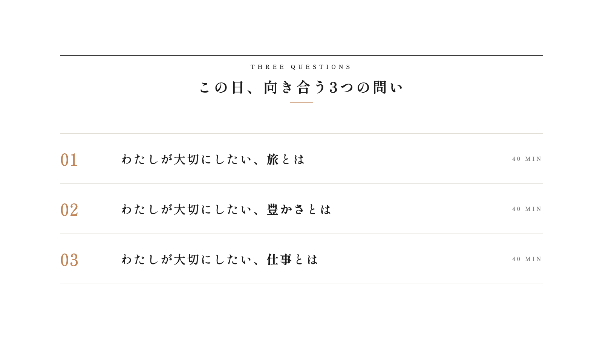
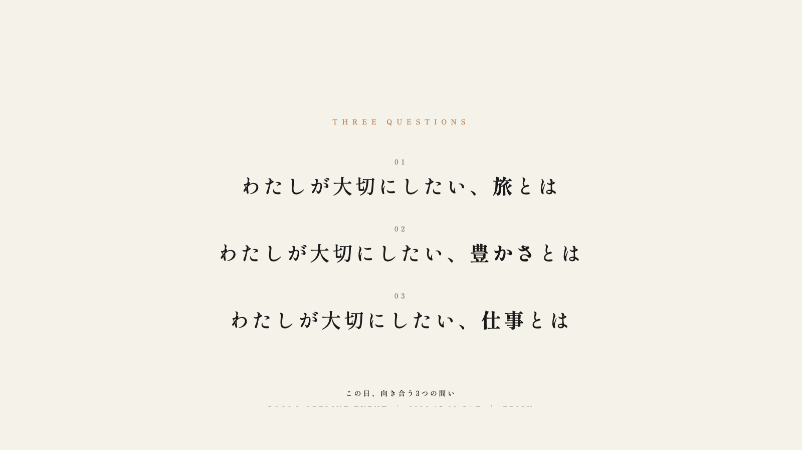
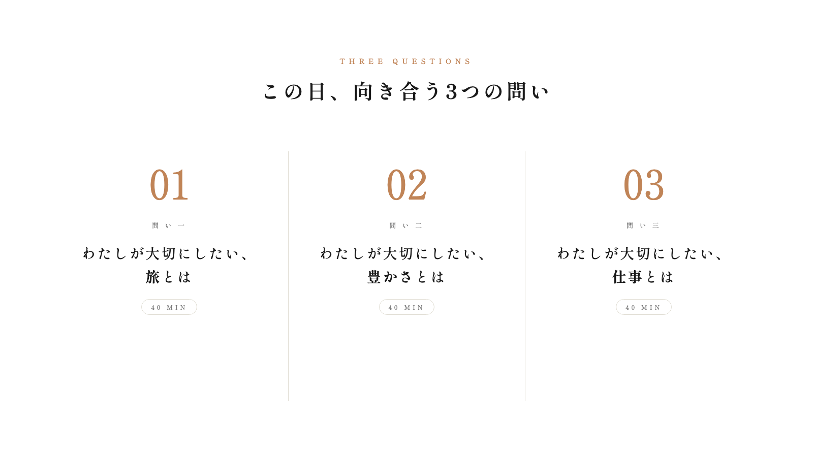

この日、向き合う3つの問い
キービジュアル比較
シンプル方向で3案 ＋ 既存1案
SIMPLE A
白背景 × 横罫線 × 縦3行
左に番号、中央に問い、右に所要時間。雑誌の目次のような整理感。最もフォーマルで読みやすい。

SIMPLE B
クリーム単色 × タイポのみ × 中央揃え
装飾を極限まで削り、問いの文字だけが浮かぶミニマル構成。番号も超小さく。静けさと品格で勝負する案。

SIMPLE C
白背景 × 3カラム横並び × 大きな番号
問いごとに列を分け、縦の細い罫線で区切る。大きな番号が視線を引く図解的な構成。スマホで見たときは縦に積まれる想定。

EXISTING
既存版 × カード型 × 色分け3色
前回作成した版。3色（金・緑・オレンジ）で問いを区別し、カード状にまとめたリッチな構成。参考として併置。